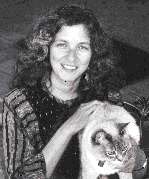

Dear Readers, My editorial in Issue 6 ended with this riddle: "I entered this entire
editorial without pressing a single key on the keyboard or clicking the mouse button. I
was as quiet as a mouse (the furry kind). How did I do this? And furthermore, why?"
Well, first I had an on-screen keyboard (a desk accessory) that interprets a click on
one of its keys as a press of that key. This DA has an option that lets you set a delay
after which the mere presence of the cursor over that key will be interpreted as a
keypress. I also had a trackball set up on the floor and used my foot to move the cursor
around. So with this I was able to type without using my hands.
As for why I wasn't using my hands--besides as a way of getting a snappy ending to the
editorial-- I'm one of many people who suffer from RSI, repetitive strain injury. In
my case, this means tendinitis in my forearms, but it can also mean carpal tunnel
syndrome and a host of other similar problems. Since my recent return to Apple ®,
I've learned that there are many software and hardware products for the Macintosh®
that can help RSI sufferers and others with limited hand movement. I'm now using a
trackball with my nondominant (less-suffering) hand and with a foot switch--a pedal
I step on to click. I'm also using a desk accessory that alerts me when I've been typing
for a half hour without at least a five-minute break (I chose delicate Tibetan-style
flute music as my auditory cue, but there are of course less sublime options). There
are many similar products that I haven't yet explored. With diligent stretching and
breaks from typing--and freedom from using the mouse--I'm able to type as much as
I need to in order to do my job. Many others are less fortunate.
That's the good news. The bad news is that many of these products don't work with
other, mainstream software: the on-screen keyboard isn't compatible with a certain
macro program I'd also benefit from using, or with the word processor I use most of
the time. This is a very real example of the effect of programming things in
nonstandard ways--for example, using GetKeys to find out what characters have been
typed rather than getting this information out of the event record, or calling the ADB
Manager when you're not writing a special driver and so really should be using
higher-level routines. (You know who you are.)
Incompatibilities notwithstanding, these products are terrific, and thanks go to all the
Macintosh developers who have created them. You've made a big difference in some
people's lives--probably including your own, since I've learned that the motivation
for many of you has been that you've had a repetitive strain injury yourselves. For
those of you who haven't yet had the problem, you'd be wise to takes steps toward
prevention. Don't ignore it; if you slave over the keyboard for long hours, it will
probably not ignore you.
While we're on the subject of doing the right thing, I might add that develop 's paper is
now recycled enough to pass California's stringent requirements for the use of the
familiar recycle logo (which we now proudly bear on our back cover). Formerly we
used paper that was 50 percent de-inked (waste paper from printing plants, with the
chemical inks removed); now our paper is also 10 percent post- consumer waste (not
de-inked). Recycled paper keeps getting better looking and more practical to use;
we're happy to be able to do our part toward saving the forests. Please do yours, and
recycle your issues of develop if you don't want to hold on to them--preferably by
passing them on to a friend! As always, we welcome your comments and suggestions.
Keep those cards and letters coming . . .
Caroline Rose Editor
CAROLINE ROSE has been writing computer documentation ever since "timesharing"
meant mainframes, not condos. After a seven-year digression into programming, she
returned to writing and joined Apple to document the inner workings of a beguiling
new computer named Macintosh. The result was a three-volume tome that was
affectionately nicknamed "The Vault of Horror." In what proved to be another
digression, she left Apple to launch NeXT's documentation effort (starting,
interestingly enough, with writing the WriteNowTM For Macintosh manual). She's
thrilled to be back at Apple with all its charms. Caroline is an avid reader, swimmer,
dancer, and hiker, and is passionate about her cat and all things Italian. Seeing Michael
Crawford in Phantom of the Opera was a recent high that she's not sure how she'll top
(but she'll try). *
SUBSCRIPTION INFORMATION Use the order form on the last page of this issue to
subscribe to develop TM. Please address all subscription-related inquiries to
develop, Apple Computer, Inc., P.O. Box 531, Mt. Morris, IL 61054 (or AppleLink
DEV.SUBS). *
BACK ISSUES For information about back issues of develop and how to obtain them,
see the reverse of the order form on the last page of this issue. Note that back issues
are also on the Developer Essentials CD-ROM disc. *